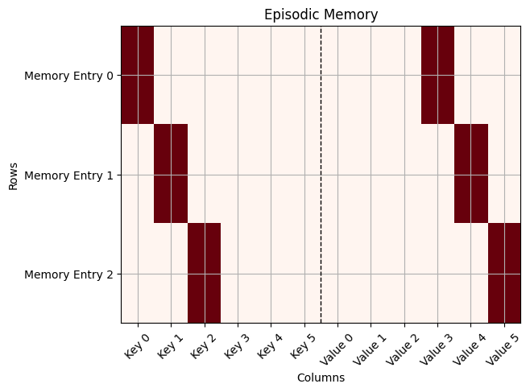

6.1 Episodic Memory#
In the previous chapters, learning was based on gradually adjusting weights in a neural network. However, humans have the ability to learn from a single experience without the need for repetition. One could argue that this “one-shot” learning can be achieved by a high learning rate. However, a high learning rate can lead to catastrophic forgetting, where the network forgets previously learned associations.
Consider for example, the Rumelhart Semantic Network from the previous chapter. If we first train the network to associate various birds with flying, and then train the network with a single example of a penguin with a very high learning rate, the network will forget the previous association with birds and flying. In general, we can mitigate this problem by using interleaved training, where we mix examples from the bird-category with the penguin example. However, this doesn’t reflect human learning, where we can learn from a single example without forgetting previous associations.
McClelland et al, 1995 proposed two complemantary learning systems: A slow learning system that learns gradually from repetition (in form of weight adjustments in the Neocortex) and a fast learning system that learns from single experiences (in form of episodic memory in the hippocampus). Here, we will explore how such a episodic memory system can be modeled in PsyNeuLink.
Installation and Setup
If the following code fails, you might have to restart the kernel/session and run it again. This is a known issue when installing PsyNeulink in google colab.
%%capture
%pip install psyneulink
import psyneulink as pnl
import numpy as np
# from torch import nn
# import torch
import matplotlib.pyplot as plt
Episodic Memory - Python Implementation#
We start with implementing a epispdic memory as python dictionary. The memory stores key-value pairs, that can be retrieved by querying the memory with a key:
em_dict = {
'morning': 'breakfast',
'afternoon': 'lunch',
'evening': 'dinner'
}
We can retrieve memory by accessing the dictionary with a key:
food = em_dict['morning']
print(food)
breakfast
However, this implementation is limited in that the key has to be an exact match. For example, we can not just access “late afternoon” and get “brunch”:
food = em_dict['late afternoon']
---------------------------------------------------------------------------
KeyError Traceback (most recent call last)
Cell In[4], line 1
----> 1 food = em_dict['late afternoon']
KeyError: 'late afternoon'
To make this more general, instead of strings, we can use (one-hot encoded) vectors as keys and values. Let’s build our own episodic memory that stores key-value pairs as list:
morning = np.array([1, 0, 0, 0, 0, 0])
afternoon = np.array([0, 1, 0, 0, 0, 0])
evening = np.array([0, 0, 1, 0, 0, 0])
breakfast = np.array([0, 0, 0, 1, 0, 0])
lunch = np.array([0, 0, 0, 0, 1, 0])
dinner = np.array([0, 0, 0, 0, 0, 1])
em = np.array([(morning, breakfast), (afternoon, lunch), (evening, dinner)])
print(em)
[[[1 0 0 0 0 0]
[0 0 0 1 0 0]]
[[0 1 0 0 0 0]
[0 0 0 0 1 0]]
[[0 0 1 0 0 0]
[0 0 0 0 0 1]]]
Let’s plit this as a matrix:
def plot(memory):
"""
Plot the episodic memory as a matrix
"""
def flatten(el):
x = el[0]
for i in el[1]:
x = np.append(x, i)
return x
# Create a 6-row matrix (3 keys and 8 values) by padding the rows appropriately
episodic_memory_matrix = [flatten(el) for el in memory]
plt.imshow(episodic_memory_matrix, cmap='Reds', aspect='auto')
labels = [f"Key {i}" for i in range(len(episodic_memory_matrix[0])//2)] + [f"Value {i}" for i in range(len(episodic_memory_matrix[0])//2)]
plt.xticks(ticks=range(len(episodic_memory_matrix[0])),
labels=labels, rotation=45)
plt.yticks(ticks=range(len(episodic_memory_matrix)),
labels=[f"Memory Entry {i}" for i in range(len(episodic_memory_matrix))])
# Add vertical dashed line to separate groups
plt.axvline(x=(len(labels)-1)/2, color='black', linestyle='--', linewidth=1)
plt.grid(visible=True)
plt.title('Episodic Memory')
plt.xlabel('Columns')
plt.ylabel('Rows')
plt.show()
#
plot(em)

Instead of using exact matches, we can now use “similarity”: We search for the key that is most similar to the query key and return the corresponding value. A good measure for similarity between two vectors is the dot product.
# We use a query key that the model has never seen before (for example, late morning: a interpolation between the morning and afternoon key)
late_morning = morning * 0.9 + afternoon * 0.1
print('Late morning query key:', late_morning)
matches = [np.dot(late_morning, key) for key, _ in em]
# our matches are:
print('Matches: ', matches)
# and the index with the highest match is:
max_match_index = matches.index(max(matches))
print('Index where key matches the most:', max_match_index)
# matched key:
key = em[max_match_index][0]
print('Matched key:', key)
# so the value is:
value = em[max_match_index][1]
print('Matched value:', value)
Late morning query key: [0.9 0.1 0. 0. 0. 0. ]
Matches: [np.float64(0.9), np.float64(0.1), np.float64(0.0)]
Index where key matches the most: 0
Matched key: [1 0 0 0 0 0]
Matched value: [0 0 0 1 0 0]
As expected, the most close match to “between morning and afternoon” is “morning” and we get the value “breakfast”.
Look at the dimensionalities of the outputs.
Why does the query key have 6 elements?
Why does the match have 3 elements?
Why does the matched key and matched value have 6 elements?
Does the key and value have to have the same number of elements?
✅ Solution 1
Since we encoded 6 different “categories” and we use one-hot encoding, the keys have 6 elements
Since there are 3 “memories” in EM
same as above
not necessarily, for example we could have used 3 one-hot vectors for keys and 3 one-hot vectors for values
Encode early evening and retrieve the value. What do you expect?
✅ Solution 2
Depending on “how early” the evening is, we expect lunch or dinner
early_evening = evening * 0.9 + afternoon * 0.1
print('Early evening query key:', early_evening)
matches = [np.dot(early_evening, key) for key, _ in em]
# our matches are:
print('Matches: ', matches)
# and the index with the highest match is:
max_match_index = matches.index(max(matches))
print('Index where key matches the most:', max_match_index)
# matched key:
key = em[max_match_index][0]
print('Matched key:', key)
# so the value is:
value = em[max_match_index][1]
print('Matched value:', value)
We can go a step further, instead of using the argmax (meaning the value that matches the most) of the matches, we can also weigh the values by their respective match. But to do that, we first need to normalize the matches (in this case we use the softmax function):
import math
import numpy as np
def softmax(x):
# calculate the sum
_sum = 0
for el in x:
_sum += math.exp(el)
res = []
for el in x:
res.append(math.exp(el) / _sum)
return res
matches = [np.dot(late_morning, key) for key, _ in em]
print('Matches:', matches)
soft_maxed_matches = softmax(matches)
print('Soft maxed Matches:', soft_maxed_matches)
weighted_values = np.sum(np.array([soft_maxed_matches[i] * np.array(value) for i, (_, value) in enumerate(em)]), axis=0)
print('Weighted Values:', weighted_values)
Matches: [np.float64(0.9), np.float64(0.1), np.float64(0.0)]
Soft maxed Matches: [0.5388225343479803, 0.24210857120159404, 0.21906889445042563]
Weighted Values: [0. 0. 0. 0.53882253 0.24210857 0.21906889]
Here, instead of choosing the best key (that is in memory), we calculate a weighted between the values stored in memory. The weights, in this case are similarity scores between the query key and the stored key in memory.
Try to understand what the softmax is doing here. Can we use something else?
Instead of the above implementation of the softmax, in use cases, we use a softmax that masks values below a certain threshold. Why is this necessary? What happens if we didn’t mask values?
💡 Hint
The softmax is a “softens” the dot product. We could have used a normalized dot product instead. In general it might be better to use the cosine similarity instead of the dot product (or make sure that all vectors are normalized)
In our toy example we have only a few memory slots. However, in a most scenarios, we want to model a large number of episodic memory slots. In this case, the match_weight vector will have a large number of entries with a lot of zeros (or near zeros). Think about why that is problematic.
✅ Solution 3
The “flattening” effect of the softmax function is dependent on the length of the vector. For example, try running the following code:
res = softmax(torch.tensor([1] + [0.01] * 10))
res_2 = softmax(torch.tensor([1] + [0.01] * 100))
print(res[0])
print(res_2[0])
Try implementing a larger memory with more key value pairs. How does the memory retrieval hold up without masking?
An additional benefit over this similarity-based retrieval approach is that nothing prevents us from using the meals, rather than the daytimes, as queries. We can also use multiple query fields. For example, the memory could contain three attributes such as daytime, meal, and location, and we can retrieve using any combination of them. In addition, we can assign different weights to the different similarity dimensions. This gives us a great deal of flexibility.
PsyNeuLink - EMComposition#
PsyNeuLink provides build-in support for episodic memory through the EMComposition. Here, we explain the most important parameters of the EMComposition. It can be used to easily build more complex memory structures, and we will use it in the next tutorial in the EGO model.
em = pnl.EMComposition(name='EM', # name
memory_capacity=1000, # number of key-value pairs
memory_template=[[0, 0], [0, 0, 0, 0], [0, 0, 0]],
# template for the memory. Note: Here we use 3 memory slots (instead of just a key value pair, we can store as many keys and pairs as we want.)
fields={'1':
{pnl.FIELD_WEIGHT: .33,
# weight of the key. This determines how much this "slot" influences the retrieval
pnl.LEARN_FIELD_WEIGHT: False, # The weight can be learned via backpropagation
pnl.TARGET_FIELD: False
# If this is a target field, the error is calculated here, and backpropagated
},
'2': {pnl.FIELD_WEIGHT: .33,
pnl.LEARN_FIELD_WEIGHT: False,
pnl.TARGET_FIELD: False},
'3': {pnl.FIELD_WEIGHT: .33,
pnl.LEARN_FIELD_WEIGHT: False,
pnl.TARGET_FIELD: False},
},
memory_fill=.001, # fill the memory with this value
normalize_memories=True, # normalize the memories
softmax_gain=1., # gain of the softmax function
softmax_threshold=0.1, # threshold of the softmax function
memory_decay=0, # memory can be decayed over time
)
em.show_graph(output_fmt='jupyter')
---------------------------------------------------------------------------
FileNotFoundError Traceback (most recent call last)
File /opt/hostedtoolcache/Python/3.11.15/x64/lib/python3.11/site-packages/graphviz/backend/execute.py:76, in run_check(cmd, input_lines, encoding, quiet, **kwargs)
75 kwargs['stdout'] = kwargs['stderr'] = subprocess.PIPE
---> 76 proc = _run_input_lines(cmd, input_lines, kwargs=kwargs)
77 else:
File /opt/hostedtoolcache/Python/3.11.15/x64/lib/python3.11/site-packages/graphviz/backend/execute.py:96, in _run_input_lines(cmd, input_lines, kwargs)
95 def _run_input_lines(cmd, input_lines, *, kwargs):
---> 96 popen = subprocess.Popen(cmd, stdin=subprocess.PIPE, **kwargs)
98 stdin_write = popen.stdin.write
File /opt/hostedtoolcache/Python/3.11.15/x64/lib/python3.11/subprocess.py:1026, in Popen.__init__(self, args, bufsize, executable, stdin, stdout, stderr, preexec_fn, close_fds, shell, cwd, env, universal_newlines, startupinfo, creationflags, restore_signals, start_new_session, pass_fds, user, group, extra_groups, encoding, errors, text, umask, pipesize, process_group)
1023 self.stderr = io.TextIOWrapper(self.stderr,
1024 encoding=encoding, errors=errors)
-> 1026 self._execute_child(args, executable, preexec_fn, close_fds,
1027 pass_fds, cwd, env,
1028 startupinfo, creationflags, shell,
1029 p2cread, p2cwrite,
1030 c2pread, c2pwrite,
1031 errread, errwrite,
1032 restore_signals,
1033 gid, gids, uid, umask,
1034 start_new_session, process_group)
1035 except:
1036 # Cleanup if the child failed starting.
File /opt/hostedtoolcache/Python/3.11.15/x64/lib/python3.11/subprocess.py:1955, in Popen._execute_child(self, args, executable, preexec_fn, close_fds, pass_fds, cwd, env, startupinfo, creationflags, shell, p2cread, p2cwrite, c2pread, c2pwrite, errread, errwrite, restore_signals, gid, gids, uid, umask, start_new_session, process_group)
1954 if err_filename is not None:
-> 1955 raise child_exception_type(errno_num, err_msg, err_filename)
1956 else:
FileNotFoundError: [Errno 2] No such file or directory: PosixPath('dot')
The above exception was the direct cause of the following exception:
ExecutableNotFound Traceback (most recent call last)
File /opt/hostedtoolcache/Python/3.11.15/x64/lib/python3.11/site-packages/IPython/core/formatters.py:1036, in MimeBundleFormatter.__call__(self, obj, include, exclude)
1033 method = get_real_method(obj, self.print_method)
1035 if method is not None:
-> 1036 return method(include=include, exclude=exclude)
1037 return None
1038 else:
File /opt/hostedtoolcache/Python/3.11.15/x64/lib/python3.11/site-packages/graphviz/jupyter_integration.py:98, in JupyterIntegration._repr_mimebundle_(self, include, exclude, **_)
96 include = set(include) if include is not None else {self._jupyter_mimetype}
97 include -= set(exclude or [])
---> 98 return {mimetype: getattr(self, method_name)()
99 for mimetype, method_name in MIME_TYPES.items()
100 if mimetype in include}
File /opt/hostedtoolcache/Python/3.11.15/x64/lib/python3.11/site-packages/graphviz/jupyter_integration.py:98, in <dictcomp>(.0)
96 include = set(include) if include is not None else {self._jupyter_mimetype}
97 include -= set(exclude or [])
---> 98 return {mimetype: getattr(self, method_name)()
99 for mimetype, method_name in MIME_TYPES.items()
100 if mimetype in include}
File /opt/hostedtoolcache/Python/3.11.15/x64/lib/python3.11/site-packages/graphviz/jupyter_integration.py:112, in JupyterIntegration._repr_image_svg_xml(self)
110 def _repr_image_svg_xml(self) -> str:
111 """Return the rendered graph as SVG string."""
--> 112 return self.pipe(format='svg', encoding=SVG_ENCODING)
File /opt/hostedtoolcache/Python/3.11.15/x64/lib/python3.11/site-packages/graphviz/piping.py:104, in Pipe.pipe(self, format, renderer, formatter, neato_no_op, quiet, engine, encoding)
55 def pipe(self,
56 format: typing.Optional[str] = None,
57 renderer: typing.Optional[str] = None,
(...) 61 engine: typing.Optional[str] = None,
62 encoding: typing.Optional[str] = None) -> typing.Union[bytes, str]:
63 """Return the source piped through the Graphviz layout command.
64
65 Args:
(...) 102 '<?xml version='
103 """
--> 104 return self._pipe_legacy(format,
105 renderer=renderer,
106 formatter=formatter,
107 neato_no_op=neato_no_op,
108 quiet=quiet,
109 engine=engine,
110 encoding=encoding)
File /opt/hostedtoolcache/Python/3.11.15/x64/lib/python3.11/site-packages/graphviz/_tools.py:185, in deprecate_positional_args.<locals>.decorator.<locals>.wrapper(*args, **kwargs)
177 wanted = ', '.join(f'{name}={value!r}'
178 for name, value in deprecated.items())
179 warnings.warn(f'The signature of {func_name} will be reduced'
180 f' to {supported_number} positional arg{s_}{qualification}'
181 f' {list(supported)}: pass {wanted} as keyword arg{s_}',
182 stacklevel=stacklevel,
183 category=category)
--> 185 return func(*args, **kwargs)
File /opt/hostedtoolcache/Python/3.11.15/x64/lib/python3.11/site-packages/graphviz/piping.py:121, in Pipe._pipe_legacy(self, format, renderer, formatter, neato_no_op, quiet, engine, encoding)
112 @_tools.deprecate_positional_args(supported_number=1, ignore_arg='self')
113 def _pipe_legacy(self,
114 format: typing.Optional[str] = None,
(...) 119 engine: typing.Optional[str] = None,
120 encoding: typing.Optional[str] = None) -> typing.Union[bytes, str]:
--> 121 return self._pipe_future(format,
122 renderer=renderer,
123 formatter=formatter,
124 neato_no_op=neato_no_op,
125 quiet=quiet,
126 engine=engine,
127 encoding=encoding)
File /opt/hostedtoolcache/Python/3.11.15/x64/lib/python3.11/site-packages/graphviz/piping.py:149, in Pipe._pipe_future(self, format, renderer, formatter, neato_no_op, quiet, engine, encoding)
146 if encoding is not None:
147 if codecs.lookup(encoding) is codecs.lookup(self.encoding):
148 # common case: both stdin and stdout need the same encoding
--> 149 return self._pipe_lines_string(*args, encoding=encoding, **kwargs)
150 try:
151 raw = self._pipe_lines(*args, input_encoding=self.encoding, **kwargs)
File /opt/hostedtoolcache/Python/3.11.15/x64/lib/python3.11/site-packages/graphviz/backend/piping.py:212, in pipe_lines_string(engine, format, input_lines, encoding, renderer, formatter, neato_no_op, quiet)
206 cmd = dot_command.command(engine, format,
207 renderer=renderer,
208 formatter=formatter,
209 neato_no_op=neato_no_op)
210 kwargs = {'input_lines': input_lines, 'encoding': encoding}
--> 212 proc = execute.run_check(cmd, capture_output=True, quiet=quiet, **kwargs)
213 return proc.stdout
File /opt/hostedtoolcache/Python/3.11.15/x64/lib/python3.11/site-packages/graphviz/backend/execute.py:81, in run_check(cmd, input_lines, encoding, quiet, **kwargs)
79 except OSError as e:
80 if e.errno == errno.ENOENT:
---> 81 raise ExecutableNotFound(cmd) from e
82 raise
84 if not quiet and proc.stderr:
ExecutableNotFound: failed to execute PosixPath('dot'), make sure the Graphviz executables are on your systems' PATH
<graphviz.graphs.Digraph at 0x7ff1080b1690>
The above figure seems complicated at first, but it follows the same principle as the torch implementation: We look it from the bottom to the top:
The arrows from the 1, 2, and 3 query to the “STORE” node, represent that these values are stored in memory
All of them ara also passed through a “MATCH” node, wich calculates the similarity between the query and the stored values (just as desibed above for the keys)
The “MATCH” nodes are then weighted and combined. (Here they are also softmaxed)
Then the result is used to retrieve the memory by multiplying the “combined matchse” with the stored values.
In our implementation, we specified input node 1 as having 2 entries (1x2 vector), the input node 2 with 4 entries (1x4 vector), and the input node 3 with 3 entries (1x3 vector). Yet, In the explanation above, I talked about adding weighted vectors together. How can that be?
💡 Hint
We are not adding the query vectors together but the matched weights. What is the shape of these weights?
✅ Solution 5
The matched weights have the shape of the number of memory slots. Their entries don’t represent the query vectors themselves, the i-th entry signifies how similar the memory in slot i is to the query vector.
This is why a weighted sum makes sense, we are literally weighing how similar 1, 2, and 3 is and then combining them. This way the retrieavel searches for the most combined (weighted) similarity
Marking a Field as Value (non-query)#
If we don’t want specific fields to be taken into account on retrieval (for example if they are the “target” fields that the model is supposed to predict), we can set their retrieval weight to “None”:
em = pnl.EMComposition(name='EM with Target', # name
memory_capacity=1000, # number of key-value pairs
memory_template=[[0, 0], [0, 0, 0, 0], [0, 0, 0]],
# template for the memory. Note: Here we use 3 memory slots (instead of just a key value pair, we can store as many keys and pairs as we want.)
fields={'1':
{pnl.FIELD_WEIGHT: .5,
# weight of the key. This determines how much this "slot" influences the retrieval
pnl.LEARN_FIELD_WEIGHT: False, # The weight can be learned via backpropagation
pnl.TARGET_FIELD: False
# If this is a target field, the error is calculated here, and backpropagated
},
'2': {pnl.FIELD_WEIGHT: .5,
pnl.LEARN_FIELD_WEIGHT: False,
pnl.TARGET_FIELD: False},
'3': {pnl.FIELD_WEIGHT: None,
pnl.LEARN_FIELD_WEIGHT: False,
pnl.TARGET_FIELD: True},
},
memory_fill=.001, # fill the memory with this value
normalize_memories=True, # normalize the memories
softmax_gain=1., # gain of the softmax function
softmax_threshold=0.1, # threshold of the softmax function
memory_decay=0, # memory can be decayed over time
)
em.show_graph(output_fmt='jupyter')
---------------------------------------------------------------------------
FileNotFoundError Traceback (most recent call last)
File /opt/hostedtoolcache/Python/3.11.15/x64/lib/python3.11/site-packages/graphviz/backend/execute.py:76, in run_check(cmd, input_lines, encoding, quiet, **kwargs)
75 kwargs['stdout'] = kwargs['stderr'] = subprocess.PIPE
---> 76 proc = _run_input_lines(cmd, input_lines, kwargs=kwargs)
77 else:
File /opt/hostedtoolcache/Python/3.11.15/x64/lib/python3.11/site-packages/graphviz/backend/execute.py:96, in _run_input_lines(cmd, input_lines, kwargs)
95 def _run_input_lines(cmd, input_lines, *, kwargs):
---> 96 popen = subprocess.Popen(cmd, stdin=subprocess.PIPE, **kwargs)
98 stdin_write = popen.stdin.write
File /opt/hostedtoolcache/Python/3.11.15/x64/lib/python3.11/subprocess.py:1026, in Popen.__init__(self, args, bufsize, executable, stdin, stdout, stderr, preexec_fn, close_fds, shell, cwd, env, universal_newlines, startupinfo, creationflags, restore_signals, start_new_session, pass_fds, user, group, extra_groups, encoding, errors, text, umask, pipesize, process_group)
1023 self.stderr = io.TextIOWrapper(self.stderr,
1024 encoding=encoding, errors=errors)
-> 1026 self._execute_child(args, executable, preexec_fn, close_fds,
1027 pass_fds, cwd, env,
1028 startupinfo, creationflags, shell,
1029 p2cread, p2cwrite,
1030 c2pread, c2pwrite,
1031 errread, errwrite,
1032 restore_signals,
1033 gid, gids, uid, umask,
1034 start_new_session, process_group)
1035 except:
1036 # Cleanup if the child failed starting.
File /opt/hostedtoolcache/Python/3.11.15/x64/lib/python3.11/subprocess.py:1955, in Popen._execute_child(self, args, executable, preexec_fn, close_fds, pass_fds, cwd, env, startupinfo, creationflags, shell, p2cread, p2cwrite, c2pread, c2pwrite, errread, errwrite, restore_signals, gid, gids, uid, umask, start_new_session, process_group)
1954 if err_filename is not None:
-> 1955 raise child_exception_type(errno_num, err_msg, err_filename)
1956 else:
FileNotFoundError: [Errno 2] No such file or directory: PosixPath('dot')
The above exception was the direct cause of the following exception:
ExecutableNotFound Traceback (most recent call last)
File /opt/hostedtoolcache/Python/3.11.15/x64/lib/python3.11/site-packages/IPython/core/formatters.py:1036, in MimeBundleFormatter.__call__(self, obj, include, exclude)
1033 method = get_real_method(obj, self.print_method)
1035 if method is not None:
-> 1036 return method(include=include, exclude=exclude)
1037 return None
1038 else:
File /opt/hostedtoolcache/Python/3.11.15/x64/lib/python3.11/site-packages/graphviz/jupyter_integration.py:98, in JupyterIntegration._repr_mimebundle_(self, include, exclude, **_)
96 include = set(include) if include is not None else {self._jupyter_mimetype}
97 include -= set(exclude or [])
---> 98 return {mimetype: getattr(self, method_name)()
99 for mimetype, method_name in MIME_TYPES.items()
100 if mimetype in include}
File /opt/hostedtoolcache/Python/3.11.15/x64/lib/python3.11/site-packages/graphviz/jupyter_integration.py:98, in <dictcomp>(.0)
96 include = set(include) if include is not None else {self._jupyter_mimetype}
97 include -= set(exclude or [])
---> 98 return {mimetype: getattr(self, method_name)()
99 for mimetype, method_name in MIME_TYPES.items()
100 if mimetype in include}
File /opt/hostedtoolcache/Python/3.11.15/x64/lib/python3.11/site-packages/graphviz/jupyter_integration.py:112, in JupyterIntegration._repr_image_svg_xml(self)
110 def _repr_image_svg_xml(self) -> str:
111 """Return the rendered graph as SVG string."""
--> 112 return self.pipe(format='svg', encoding=SVG_ENCODING)
File /opt/hostedtoolcache/Python/3.11.15/x64/lib/python3.11/site-packages/graphviz/piping.py:104, in Pipe.pipe(self, format, renderer, formatter, neato_no_op, quiet, engine, encoding)
55 def pipe(self,
56 format: typing.Optional[str] = None,
57 renderer: typing.Optional[str] = None,
(...) 61 engine: typing.Optional[str] = None,
62 encoding: typing.Optional[str] = None) -> typing.Union[bytes, str]:
63 """Return the source piped through the Graphviz layout command.
64
65 Args:
(...) 102 '<?xml version='
103 """
--> 104 return self._pipe_legacy(format,
105 renderer=renderer,
106 formatter=formatter,
107 neato_no_op=neato_no_op,
108 quiet=quiet,
109 engine=engine,
110 encoding=encoding)
File /opt/hostedtoolcache/Python/3.11.15/x64/lib/python3.11/site-packages/graphviz/_tools.py:185, in deprecate_positional_args.<locals>.decorator.<locals>.wrapper(*args, **kwargs)
177 wanted = ', '.join(f'{name}={value!r}'
178 for name, value in deprecated.items())
179 warnings.warn(f'The signature of {func_name} will be reduced'
180 f' to {supported_number} positional arg{s_}{qualification}'
181 f' {list(supported)}: pass {wanted} as keyword arg{s_}',
182 stacklevel=stacklevel,
183 category=category)
--> 185 return func(*args, **kwargs)
File /opt/hostedtoolcache/Python/3.11.15/x64/lib/python3.11/site-packages/graphviz/piping.py:121, in Pipe._pipe_legacy(self, format, renderer, formatter, neato_no_op, quiet, engine, encoding)
112 @_tools.deprecate_positional_args(supported_number=1, ignore_arg='self')
113 def _pipe_legacy(self,
114 format: typing.Optional[str] = None,
(...) 119 engine: typing.Optional[str] = None,
120 encoding: typing.Optional[str] = None) -> typing.Union[bytes, str]:
--> 121 return self._pipe_future(format,
122 renderer=renderer,
123 formatter=formatter,
124 neato_no_op=neato_no_op,
125 quiet=quiet,
126 engine=engine,
127 encoding=encoding)
File /opt/hostedtoolcache/Python/3.11.15/x64/lib/python3.11/site-packages/graphviz/piping.py:149, in Pipe._pipe_future(self, format, renderer, formatter, neato_no_op, quiet, engine, encoding)
146 if encoding is not None:
147 if codecs.lookup(encoding) is codecs.lookup(self.encoding):
148 # common case: both stdin and stdout need the same encoding
--> 149 return self._pipe_lines_string(*args, encoding=encoding, **kwargs)
150 try:
151 raw = self._pipe_lines(*args, input_encoding=self.encoding, **kwargs)
File /opt/hostedtoolcache/Python/3.11.15/x64/lib/python3.11/site-packages/graphviz/backend/piping.py:212, in pipe_lines_string(engine, format, input_lines, encoding, renderer, formatter, neato_no_op, quiet)
206 cmd = dot_command.command(engine, format,
207 renderer=renderer,
208 formatter=formatter,
209 neato_no_op=neato_no_op)
210 kwargs = {'input_lines': input_lines, 'encoding': encoding}
--> 212 proc = execute.run_check(cmd, capture_output=True, quiet=quiet, **kwargs)
213 return proc.stdout
File /opt/hostedtoolcache/Python/3.11.15/x64/lib/python3.11/site-packages/graphviz/backend/execute.py:81, in run_check(cmd, input_lines, encoding, quiet, **kwargs)
79 except OSError as e:
80 if e.errno == errno.ENOENT:
---> 81 raise ExecutableNotFound(cmd) from e
82 raise
84 if not quiet and proc.stderr:
ExecutableNotFound: failed to execute PosixPath('dot'), make sure the Graphviz executables are on your systems' PATH
<graphviz.graphs.Digraph at 0x7ff1047eaf90>
As you see, this way 3 is stored (and retrieved) but is not taken into account when calculating the matched similarity (it is not “used” to retrieve from memory).